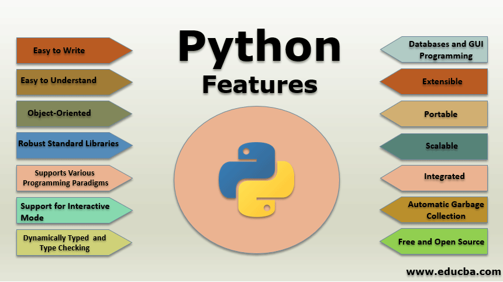
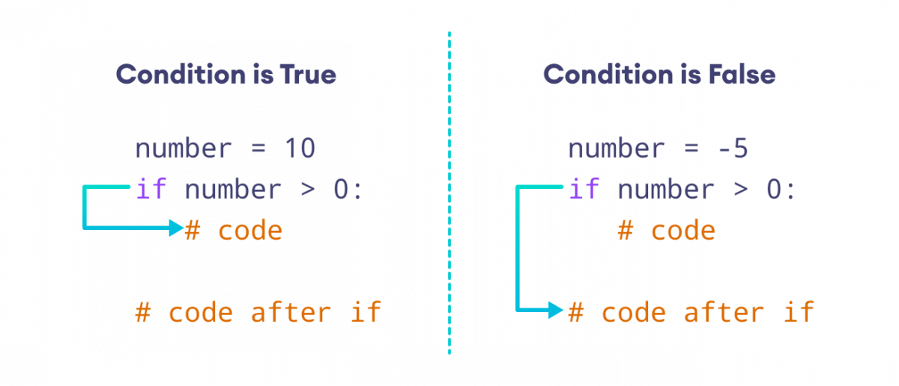

By Andrei Fulga, Posted on 05.04.2020

This is an introductory article about the syntax and main characteristics of python.
We are going to be using python 3, the latest version of python up to date.
I strongly recommend following along as I explain these concepts.
I suggest downloading an IDE. My preffered choice is PyCharm, but you can choose whatever IDE you find suitable for you.
By Andrei Fulga, Posted on 05.04.2020
As you can see in the above image python has several characteristics
You can study the image, however the most important things that you should remember are these:
By Andrei Fulga, Posted on 05.05.2020

In python just like several other rprogramming languages, there are some data types predefined. These include:
Unlike other programming languages, in python you do not have to mention the data type before declaring a variable.
With these data types you can do several operations like addition (x+y), substraction (x-y), multiplication (x*y) and many more depending on which data types you use.
By Andrei Fulga, Posted on 06.05.2020
In Python we often want to execute diferent instructions depending on the truth value of a certain situation.
For example, if we want to see whether a number is positive or not we can use an "if..." statement.
As we can see in the image above, the program checks if the number satisfies a given condition. If it does, then it goes to one branch of the code. If it doesn't then it goes on the other branch.
By Fulga Andrei, Posted on 07.05.2020
A loop is a sequence of instruction s that is continually repeated until a certain condition is reached.
Typically, a certain process is done, such as getting an item of data and changing it, and then some condition is checked such as whether a counter has reached a prescribed number.
In python there are 2 types of loops:

The above image is a logical representation of a for loop